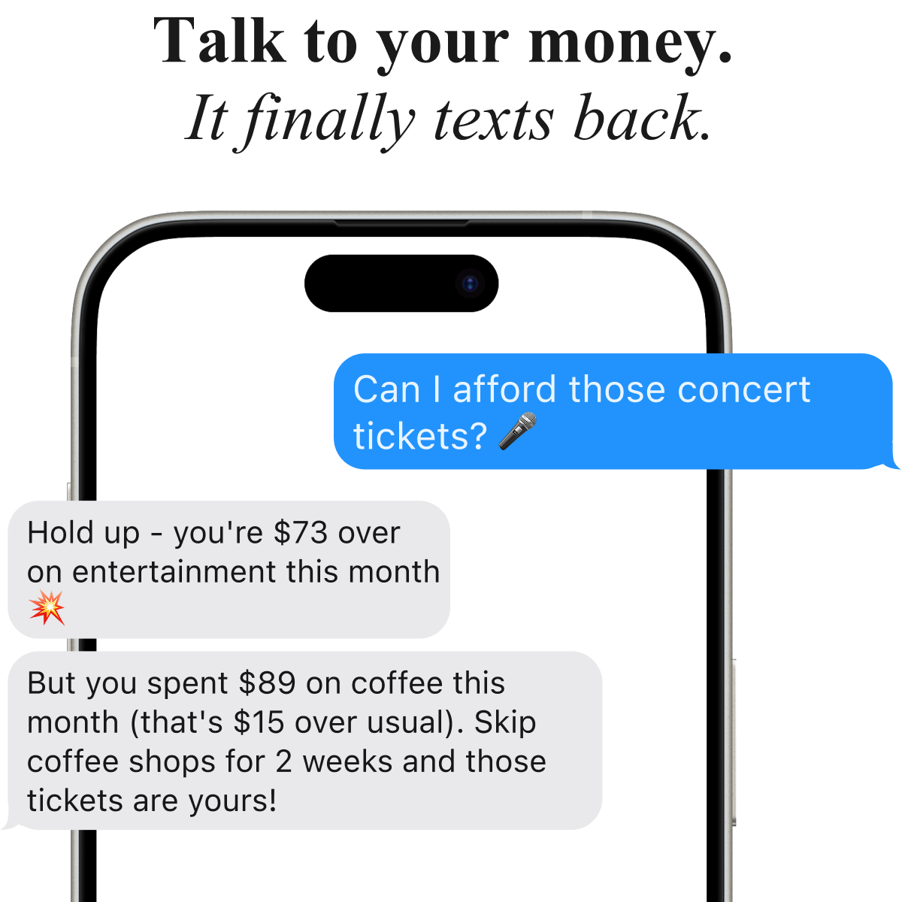
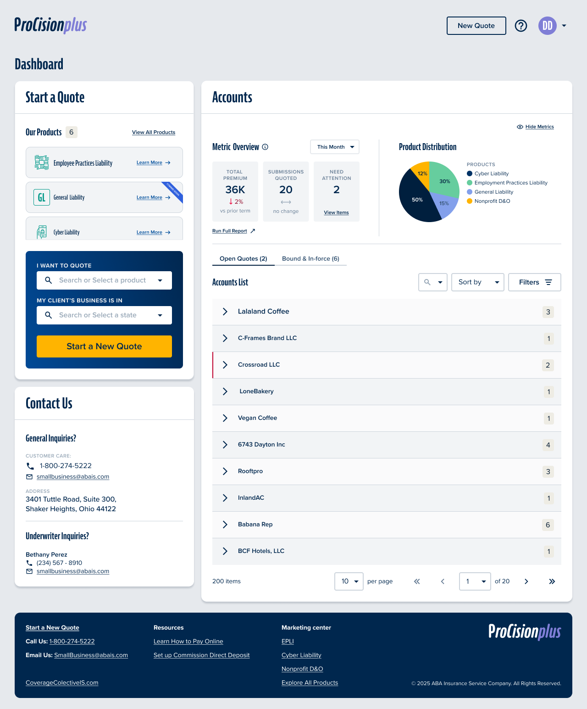
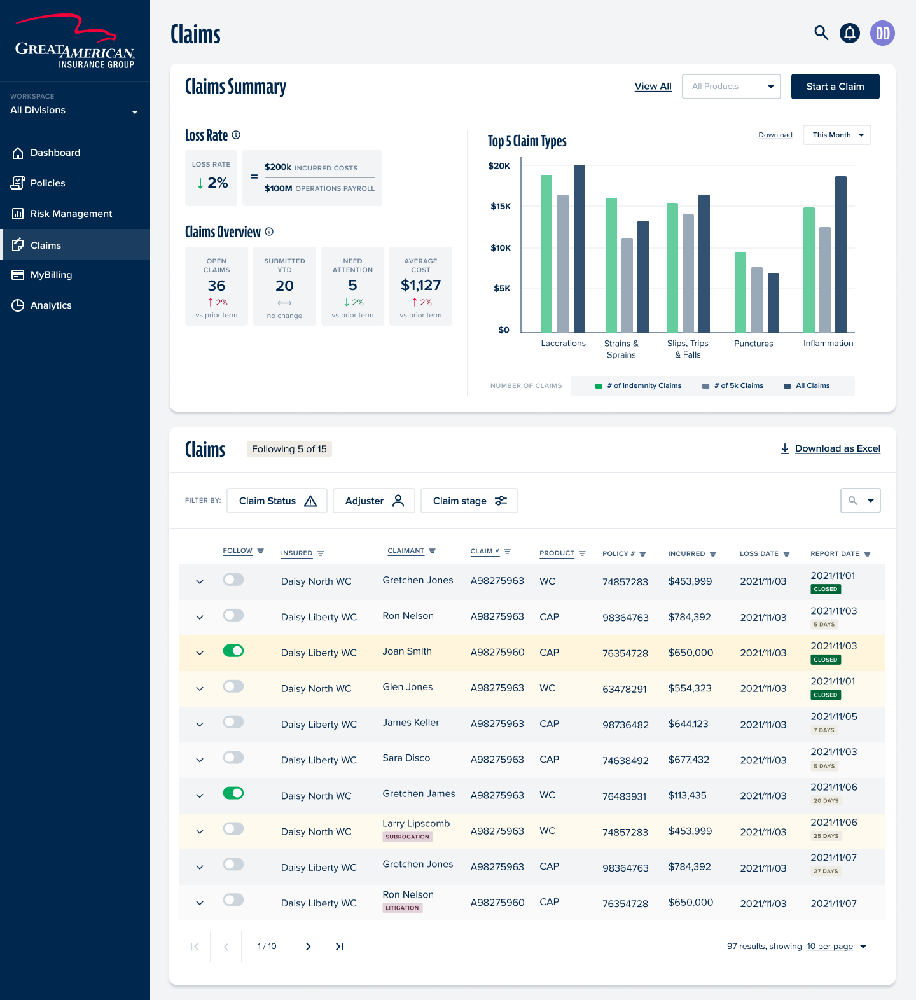
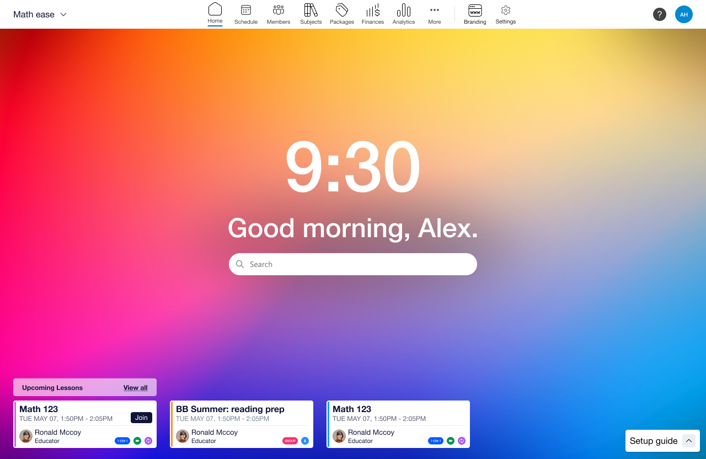
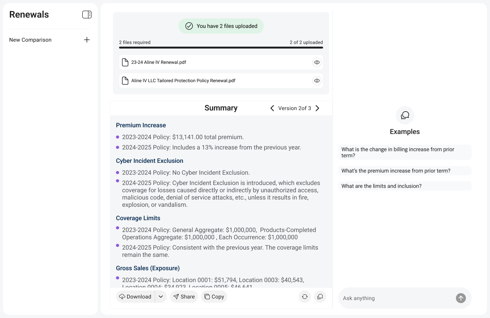
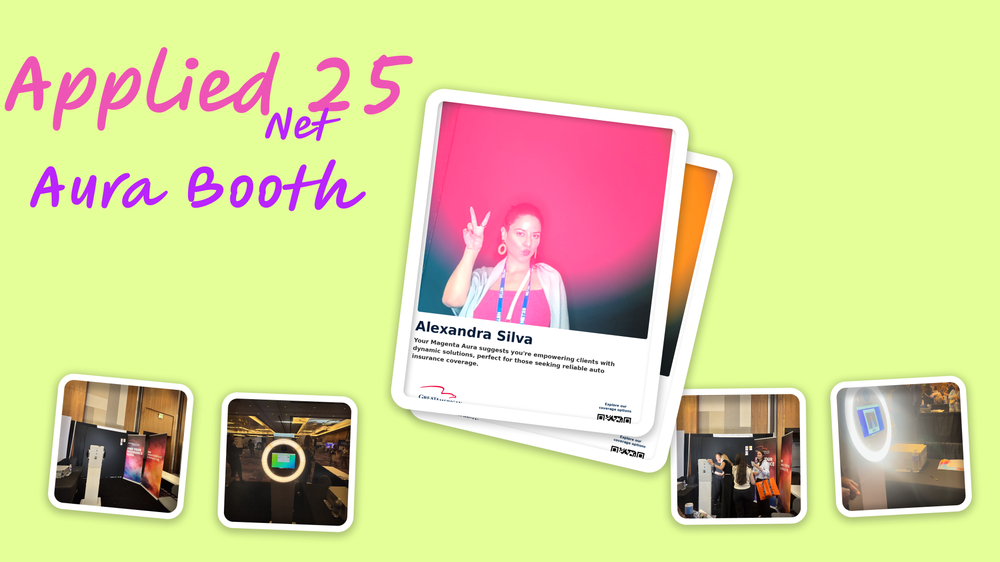

Designing
things people
actually want
I design like an engineer and build like a designer. I've founded and shipped multiple products, and felt the cost of every design decision at 2am with real people depending on it. That's the standard I bring to every product I touch.
Good design doesn't just solve problems.
It makes people feel understood.
"The best design I've ever seen didn't impress me. It made me feel seen."
Most designers hand off to engineers and hope for the best. Most engineers implement what they're given and move on. I do both, which means I catch the problems that fall through that gap: the interaction that looks right in Figma but breaks in real scroll behavior, the API response that changes what the UX needs to be. Seven years of shipping have made that instinct fast.
I've also founded products from zero, which changes how you design permanently. When you've been the one debugging at midnight because a flow confused real users, you stop designing for presentations and start designing for the moment it actually has to work. That's the lens I bring whether I'm building my own product or embedded in someone else's.
Meet WithBFF
"What if your bank account had a best friend instead of a dashboard?"
Conversational-only UI
No screens to navigate. The interface is the conversation, built from scratch for SMS and messaging.
Trust-first onboarding
Connecting financial data is scary. Redesigned to build the relationship before asking for access.
LLM orchestration with tools
Moved from rigid intent classification to flexible LLM orchestration, giving BFF real conversational intelligence.
Projects I'm proud of

WithBFF - Conversational Finance App
I'm building the personal finance app I wish existed. No dashboards. No guilt. Just a text message that says "you spent $340 on food last week, want to talk about it?", and actually means it.
View full spotlight ↑
Coverage Collective - ABAIS Quoting Portal
ABAIS's distribution was owned by a third party. I designed the product that changed that, a new quoting portal ABAIS controls, built to expand beyond Progressive's channel constraints and give agents a faster, smarter way to quote and bind.
Open case study ↓Design Thesis
"When your distribution channel is controlled by a third party, your product ceiling is someone else's ceiling. Building Coverage Collective was about reclaiming that ceiling, and proving that a great distribution experience is a competitive moat, not a commodity."
What was actually broken
On the surface, ABAIS had a quoting portal. What they didn't have was a quoting portal they controlled. ProCision (P1) was built inside Progressive's distribution model, which meant product expansion decisions weren't ABAIS's to make. Workers Comp, BOP, General Liability: all off-limits as long as P1 was the front door.
The real problem wasn't UI. It was channel dependency. Every agent who came through Progressive-deflected traffic was traffic ABAIS borrowed, not owned. P2 was the product answer to a business strategy problem.
The hard part
Without Progressive vetting the entry, we had to design identity, licensing, and compliance from scratch, while keeping enough momentum that engineering didn't slip into "let's just copy P1."
Who I was designing for
Independent insurance agents. They move fast, switch contexts constantly, and have zero patience for portals that make them work for information. They're not evaluating design, they're judging whether a tool respects their time.
Speed to quote
Non-negotiable
Class code hell
100+ WC codes per state
Self-registration
No Progressive handoff
Status amnesia
"Is this quoted or started?"
A nuance I pushed hard on: P2 needed to handle non-licensed agency staff as first-class users, people who support quoting without being the licensed agent. P1's "on their honor" model didn't translate. We had to design for both roles explicitly.
The bets I made
"Try before compliance" - quote first, bind after registration
The instinct was to gate the whole experience behind full agency registration. I pushed back. Forcing paperwork before value destroys adoption, especially for agents exploring a new platform. So we designed a model where users quote and save immediately, but binding is gated until registration + required documents (W-9, E&O) are approved. You get a real experience; we get real intent signals.
Tradeoff, some agencies start quotes they can't bind; we accepted this for higher top-of-funnel conversionAccount-centric dashboard with clear, named status taxonomy
The existing status language was genuinely ambiguous, "quote started" vs "quoted" looked like synonyms to anyone not inside the system. I rebuilt the tab structure around account-centric organization and fought for explicit status naming. Agents either feel in control of their pipeline or they context-switch to email and phone, and that's the product losing.
Tradeoff, more upfront IA work; prevented technical debt that would have required a painful migration laterKeyword search over dropdown for Workers Comp class codes
WC class codes can exceed 100 per state. The legacy system used a scrollable dropdown. This is a small thing that adds minutes to every quoting session. I designed keyword search instead. It's obvious in hindsight, but "obvious in hindsight" is exactly where good design lives.
Tradeoff, additional search implementation vs. reusing existing component; the workflow gain was worth itExplicitly defer metrics, help center, and branding from MVP
There's a category of scope that feels important but isn't load-bearing for launch. I named it and deferred it, metrics UX, help center pages, final brand assets. The goal of MVP is to prove the core loop, not to polish everything. Deferral without documentation becomes technical debt; we documented every decision clearly.
Tradeoff, some stakeholder tension on "incomplete" feel; traded against shipping a stable core fasterWhat shipped
Full direct-entry model with licensing validation for both licensed agents and non-licensed support staff. No Progressive handoff required.
Single "Start Quote" entry point scaling across WC, BOP, and GL, architected so marketing could swap in final brand assets post-launch without touching flows.
Redesigned tab structure, explicit status taxonomy, intelligent sort defaults, simple for low-volume, expandable for high-volume agencies.
W-9 and E&O upload, user/role/location management, all integrated into the binding gate without blocking quoting workflow.
What this unlocked
A distribution channel ABAIS owns. P2 isn't just a prettier portal, it's a strategic asset. Products that couldn't exist in P1 now have a front door.
Agent-validated before engineering build-out. Think-aloud prototype sessions with real agents, not assumptions, shaped the final flows.
Measurement infrastructure from day one. EpiCenter as primary KPI source + Quantum Metric behavioral analytics. Future iterations can be grounded in data, not stakeholder opinion.
A continuous delivery rhythm. Standups, IPMs, retros, not a big-bang release. For a company transitioning to a platform model, this is the cultural outcome that compounds.
If I had the next 6 months
Make registration status visible inside the product. Right now, agencies get emails when they're approved. That's a broken feedback loop, visible progress states inside P2 would reduce support volume and increase binding rates.
Run an IA validation study. Card sort + tree test for the dashboard, specifically comparing low-volume and high-volume agency mental models. The current structure is a strong hypothesis, it needs the data to become a conviction.
Progressive disclosure for power users. The default experience should stay simple. But there's a cohort of high-volume agencies who need advanced filters, bulk actions, and export. Design the unlock mechanism, not the feature for everyone.
Separate product KPIs from marketing KPIs. EpiCenter + Quantum Metric is a good foundation, but until someone owns the definition boundary, measurement gets political. I'd build the operating agreement first, then instrument accordingly.

Insured Portal - AIE / Great American
I designed this product from a blank canvas in 2022 and took it to live with all users in 2025. Three years. Two major launches. One UX audit I wrote myself because I cared enough to look for the cracks. This is what sustained design ownership actually looks like.
Open case study ↓Design Thesis
"Most enterprise portals are built once and slowly become legacy. I spent three years refusing to let that happen. Sustained design ownership means knowing where every skeleton is buried, and using that knowledge to get ahead of problems instead of reacting to them."
The scope and what made it real
The AIE Insured Portal replaced a fragmented legacy experience for policyholders at Great American Insurance Group. Before this, insureds had no unified self-service layer, policies, claims, billing, documents, and reports lived in disconnected systems or not online at all.
I owned design from the beginning: zero-to-one in 2022, through beta, through a phased BU rollout, through a UX audit I authored unprompted, through a final enterprise launch in 2025. I didn't just design screens, I maintained the design system, the UX rationale, and the product thinking for three years.
Two launches. Two very different problems.
Phase 01
Strategic Comp Launch
Go-live: Oct 28, 2023
The problem here was getting from design to live with enough trust in the system that stakeholders would commit to a go-live date. I drove beta feedback collection, survey design, and design-behavior clarifications that answered the hard questions before launch, not after. Strategic Comp had the highest visibility and the least tolerance for ambiguity.
Phase 02
Enterprise BU Migration + MyBilling Consolidation
Go-live: March 8, 2025 · Confirmed live with all users
The problem here was complexity at scale. Multiple BUs have different permission models, some users see policy hyperlinks, some don't; some see claims, some don't; billing actions vary by access level. I designed for every BU permutation, maintained consistency across them, and was on the internal go-live support line when it went live to everyone.
What made this genuinely hard
Designing a permission-based experience where the same component can look and behave differently based on BU access, without the interface ever feeling broken or incomplete to the user experiencing it. A user who can't see claims shouldn't feel like the claims tab is "missing." They should feel like the portal was built for them.
The bets I made
Like-for-like baseline as the starting contract
Before designing anything, I documented what the portal was supposed to do, registration fields, emulation patterns, navigation areas, policy/claims expectations. This became the "like-for-like" baseline: not a wish list, but a contract between design, product, and engineering about what Phase 1 had to do. It sounds like process hygiene; it was actually what prevented scope arguments for 18 months.
Tradeoff, time spent upfront on documentation vs. getting into Figma faster; the documentation paid back 10x in alignmentDesign for the edge case, not just the happy path
Most portals fail at the permission boundary, when a user's access level means something doesn't appear, the design just... breaks. I pushed to design every BU permutation as a first-class experience, not an afterthought. Blacklist vs. whitelist users, with and without claims, with and without billing actions, each combination had a designed state, not a fallback.
Tradeoff, significantly more design surface area; prevented a category of "it looks broken" support tickets post-launchBuild measurement into the product before the product launches
I coordinated the in-portal satisfaction survey, not just the UX of it, but the deployment pipeline. CERT validation before PROD deployment. This was deliberate: you can't improve something you're not measuring, and you can't trust measurement that wasn't validated. The survey gave us structured feedback signals post-launch instead of just incident reports.
Tradeoff, added coordination overhead; paid for itself in the quality of user signals we got in the first 60 daysWrite the UX audit before anyone asked for it
After Phase 1, I authored a formal UX audit report, categorized findings across login, dashboard, policies, claims, billing, and user settings, with a ranked defect summary. Nobody asked me to do this. I did it because I had been living in this product long enough to know where the cracks were, and I didn't want to wait for user complaints to surface them. The audit became the improvement backlog for Phase 2 readiness.
Tradeoff, self-initiated work outside normal sprint scope; created shared visibility that the team didn't have beforeWhat I designed and owned
The foundational scope document. Registration fields, employee emulation patterns, policy listing, navigation structure. The starting contract for the whole product.
Every combination of access level, blacklist vs. whitelist, with/without claims, with/without billing actions, designed as intentional states, not fallbacks.
FNOL entry point and instructional experience for the A&H business unit. Delivered Figma components back to Product with environment-specific FNOL link logic.
Designed and coordinated the satisfaction survey UX, including copy updates, validation in CERT, and deployment pipeline before PROD, enabling structured feedback from launch day.
Self-initiated comprehensive audit across all major portal journeys, login, dashboard, policies, claims, billing, user settings. Ranked defect summary with linked backlog. Written to create organizational visibility, not just document problems.
What this demonstrates
Zero to live with all users. I designed this product from nothing in 2022. On March 8, 2025, it was confirmed live across all users and all business units. That's a full product lifecycle arc, and I was the design thread through all of it.
Proactive, not reactive. The UX audit wasn't assigned to me. I wrote it because three years of product ownership had given me an asset nobody else had: a complete mental model of what was working and what wasn't. I used that asset proactively.
Stakeholder trust at scale. Phase 2 involved multiple BUs, engineering teams, business leadership, and internal support readiness. I navigated all of it, design reviews, go-live support lines, feedback coordination, as a design partner, not a pixel pusher.
Systems thinking, not feature thinking. The like-for-like baseline, the permission model documentation, the satisfaction survey pipeline, these weren't features. They were the infrastructure that let the features survive contact with reality.
What I'd fight for next
Personalized dashboard by BU and role. Right now, the portal adapts via permissions, but it doesn't adapt intelligently. A Strategic Comp insured and a Workers Comp insured have different mental models of what "my policy" means. I'd design toward that.
Close the feedback loop on the UX audit backlog. The audit created a ranked defect list. I'd want to track which items shipped, which got deprioritized, and why, to turn the audit from a one-time artifact into a living quality signal.
Proactive claims status communication. Policyholders check claim status anxiously. The current model is reactive, they come to the portal to check. I'd redesign around proactive status push (email, SMS) with the portal as a detail layer, not the primary notification channel.
Instrumented design QA. Post-launch, I'd set up Quantum Metric funnel tracking specifically on the journeys flagged in the audit. Pair qualitative audit findings with quantitative drop-off data, that's where the highest-confidence improvements come from.

Noonclass - Operating System for Independent Tutors
Independent tutors are running real businesses on a stack of Calendly, Venmo, Google Sheets, and Instagram. I co-founded Noonclass to give them what they actually needed: not another marketplace, but an operating system they own.
Open case study ↓Design Thesis
"Independent tutors are not failing because they are bad teachers. They are failing because they are running businesses with no business infrastructure. The opportunity was not to build a better marketplace. It was to build the operating layer that turns a solo tutor into a professional."
The problem hiding in plain sight
Independent tutors are everywhere. K-12 subject tutors, test prep instructors, language teachers, private music and sports coaches. They are skilled professionals running real businesses. And almost all of them are doing it with a patchwork of tools never designed to work together.
Calendly
For scheduling
Venmo / Zelle
Chasing payments
Google Sheets
Student tracking
Getting discovered
Every tool works fine in isolation. Together they create an operational burden that grows with every new student. Tutors spend more time managing the business than they spend teaching. Late payment reminders via DM. Manually texting Zoom links. Rebuilding student notes in a spreadsheet every semester.
The insight that sharpened everything
Platforms like Wyzant or Tutor.com help students find tutors. Nobody was helping tutors run sustainable businesses after they found students. The gap was not discovery. It was infrastructure.
What we chose to build, and what we deliberately did not
This is the decision that defines any early-stage product. When you have limited team and limited time, the things you say no to matter as much as what you build.
Business infrastructure for independent tutors
Scheduling with calendar integration, embedded payments via Stripe, student management dashboard, branded public storefront, automated confirmations and reminders. One coherent system instead of five disconnected tools.
Tutor marketplace
Crowded space with established players. More importantly, it would have put us in competition with platforms and given tutors less ownership, not more. The whole thesis was tutor empowerment, not dependency on another platform.
Tradeoff: smaller initial TAM; much stronger product differentiation and tutor loyaltyCourse / content platform
Tutors were not trying to become creators or course builders. They wanted to teach their existing students better and take on more students without drowning in admin. A content platform would have solved the wrong problem entirely.
Tradeoff: no passive income angle; correct framing of what tutors actually doThe bets I made as product lead
Branded tutor pages over directory listings
Every platform puts tutors in a list. We gave each tutor their own page they owned and controlled. This was not a cosmetic decision. It changed how tutors thought about their business. A directory listing says "you are one of many options." A branded page says "this is your business." That psychological shift changed how they priced, how they presented themselves to parents, and how much they invested in the platform.
Tradeoff: more complex to build per-user pages; tutor retention and pride of ownership significantly higherNative Stripe payments over external link to Venmo
The easy path was telling tutors to link their existing Venmo. The right path was embedding payments natively. The friction difference is enormous from the parent's perspective: clicking a link that opens Venmo is three extra steps, requires the parent to have the app, and breaks the professional feel of the booking experience entirely. Native payments made Noonclass feel like a real product, not a scheduling layer on top of a personal payment app.
Tradeoff: Stripe integration complexity and fees; dramatically cleaner parent experience and payment capture rateDefault automation instead of optional automation
Most SaaS tools make automation a feature you have to discover and turn on. We flipped that: confirmations, reminders, and session links were automatic unless you turned them off. This matters because tutors are not SaaS power users. They are teachers who want software that works without demanding configuration time. Default-on automation reduced support burden and delivered immediate value without requiring any setup expertise.
Tradeoff: some tutors wanted more manual control; the vast majority never needed itGuided step-by-step setup over free-form configuration
Profile, services, pricing, availability, publish. Five steps in a linear flow. This sounds obvious but it was a deliberate choice against a more "flexible" dashboard-first onboarding. Flexibility is a trap for non-technical users. A blank dashboard with many options creates paralysis. A linear setup flow gets tutors to their first live page in under an hour, which creates the momentum to keep going.
Tradeoff: less flexibility upfront; far higher onboarding completion and time-to-liveDesigning three distinct journeys
Noonclass had two primary users with fundamentally different contexts: tutors running a business, and parents booking a service. Getting both right without over-complicating either was the core UX challenge. A third loop, operations, closed the system for the tutor side.
Flow 01
Tutor Setup
Guided · Linear · Under 1 hour to live
Profile → Services + Pricing → Availability → Publish. Five steps in a strict linear flow. No blank dashboard. No free-form configuration. Tutors have a live branded page before they have time to second-guess anything.
Flow 02
Parent Booking
Trust-first · Self-serve · Zero friction
Discover → View profile → Book slot → Pay → Receive session link. Every step is on the tutor's branded page. No external redirects, no app downloads, no Venmo links breaking the professional experience.
Flow 03
Tutor Operations
Automated · Central · Always current
Dashboard → Manage students → Track sessions → View earnings. The spreadsheet, the DMs, the manual reminders, all replaced by one dashboard that updates automatically as bookings come in.
What shipped
Individual branded pages tutors owned and shared. Services, pricing, bio, availability, booking, all in one place. Professional enough to justify premium rates and credible enough for parents to trust immediately.
Parents book directly from the tutor's page. Calendar sync prevents double-booking. Confirmation and session links go out automatically, no manual Zoom link in a DM.
Embedded checkout at point of booking. No redirects, no Venmo, no chasing invoices after the session. Revenue captured before the lesson happens.
All students, sessions, notes, and earnings in one view. Replaced the Google Sheet and the mental overhead that came with it.
Confirmations, reminders, session links, payment receipts, all automatic, all branded to the tutor, all requiring zero manual effort after setup. On by default. Turn off only if you want to.
UX patterns that held the whole thing together
Step-by-step onboarding over free-form dashboards. Progressive disclosure so tutors weren't overwhelmed on day one. Default automation so non-technical users got value immediately without needing to discover settings. Trust-building visual design on parent-facing pages, because a parent deciding who teaches their kid needs to feel confident, not just informed.
What this demonstrated
Tutors reported reduced admin time and more professional parent interactions. The clearest signal: tutors started charging higher rates after launching their Noonclass page. Not because anything changed about their teaching. Because the product made them look, and feel, like a legitimate business.
The positioning insight that carried forward into WithBFF. "Not a marketplace, but an operating layer" became the mental model I bring to every product now. WithBFF is the same bet applied to personal finance: not another app competing for attention in the app store, but an operating layer for your financial life that lives where you already are.
Design for the user's identity, not just their workflow. The branded page was not a UX decision. It was an identity decision. Tutors who felt like entrepreneurs behaved like entrepreneurs. Software that changes how someone thinks about themselves builds a different kind of loyalty than software that just removes friction.
Default automation is a product philosophy, not a feature. Non-technical users do not discover settings. They experience what you ship by default. This thinking shaped everything I built after: WithBFF's proactive insights, the trust-first onboarding arc, the progressive data quality rollout, all on by default, invisible when working correctly.
First full product lifecycle as a founder. Observation, user interviews, product strategy, UX design, Figma to Webflow, Stripe integration, real user onboarding. Noonclass is where I became a product person, not just a designer.
Honest retrospective
Onboarding was still too heavy for the least technical tutors. We got setup completion high with the linear flow, but tutors who had never used SaaS products in a professional context still needed more hand-holding than the product provided. The gap between "guided setup" and "genuinely supported setup" is wider than it looks.
We underestimated how much tutors needed business education alongside the tool. Giving someone scheduling software does not automatically make them good at setting their prices or filling their schedule. The product was right. The surrounding context, what I would now call the activation layer, was thin.
Growth tooling was the gap that mattered most. Tutors loved the operational efficiency. What they wanted next was help getting more students. A referral system, an SEO-optimized public page, a shareable booking link, these were table stakes for the next version that did not get built before the pivot.
The key learning I carried into WithBFF: independent professionals do not just need tools. They need systems that make them feel legitimate. That sentence is as true for tutors as it is for people managing their money. The emotional job-to-be-done is often "make me feel like I am doing this right," and software that addresses that directly builds a different kind of loyalty than software that just removes friction.

InsuredInsights - AI Policy Renewal Intelligence
Insurance agents spend 2 hours manually comparing renewal policies line by line. I founded InsuredInsights to collapse that to under 2 minutes, turning dense policy PDFs into structured, actionable intelligence.
Open case study ↓
Aura Card Photo Booth
Insurance conferences are a sea of tablecloths, brochures, and passive swag. I designed an AI-powered booth that turned each attendee's risk profile into a personalized visual aura they could see, hold, and share.
Open case study ↓Design Thesis
"Insurance is abstract by nature. Risk is invisible. Coverage is complex. Value is hard to feel. Every traditional booth doubles down on that abstraction with more information. The Aura Booth went the opposite direction: make risk visible, make it personal, make it something people want to photograph and share. If you can make someone feel something about insurance, you have done something the industry almost never does."
The actual problem at insurance conferences
Walk the expo floor of any insurance industry conference and you will see the same thing repeated fifty times: a table with a branded tablecloth, a retractable banner, a bowl of mints, and a sales rep waiting to hand you a brochure. Everyone is competing for the same finite attention with the same finite playbook.
Attendees have developed a survival behavior for this environment. They scan fast, they grab swag, and they keep moving. Actual engagement, the kind that creates a conversation or a lead worth following up on, is rare. And it is rare not because the products are bad but because the activation format is broken.
The real problem underneath
Insurance is abstract. You are asking people to feel something about a product they cannot see, whose value only becomes real in a moment of loss they hope never comes. That abstraction is the root cause of low engagement, low recall, and low emotional connection. Brochures do not fix abstraction. They reinforce it.
Three concepts, one clear winner
Before committing to execution I explored three distinct activation formats. The decision was not just aesthetic. It was about which format could create a genuine emotional moment in a chaotic, distraction-heavy environment in under three minutes per person.
Insurance quiz kiosk
A touchscreen quiz generating a personalized risk score. Clean, informational, logical. Also: high cognitive load, zero visual payoff, and exactly the kind of thing people walk past at conferences because it looks like homework. The format asked too much from attendees before giving them anything.
Rejected: cognitive load too high, no shareable artifact, indistinguishable from a dozen other "interactive" kiosksGamified risk score display
Numerical risk rating with animated graphics. More engaging than a quiz but still fundamentally abstract. A number does not create an identity. It creates a comparison. And comparisons at insurance conferences either intimidate or bore. Neither is a lead-generating emotion.
Rejected: felt generic, no physical takeaway, numerical output does not create personal connectionPersonalized AI risk aura
Risk becomes color. Coverage becomes energy layers. Profile becomes a visual identity. The aura metaphor was chosen because it does three things simultaneously that no other format could: it creates an immediate visual payoff, it makes the output feel personal and unique rather than generic, and it produces something people want to photograph. It turned an abstract insurance profile into a piece of identity.
Chosen: emotionally engaging, photogenic, intuitive to understand without explanation, creates a physical artifactDesigning the five-step booth journey
Conference activations fail when they front-load friction. Registration forms before any payoff. Explanations before any hook. The Aura Booth journey was designed around a simple principle: deliver the visual wow first, capture the lead second. Every step was sequenced to build anticipation toward the reveal moment.
Step 01
Attraction
Large-format aura visuals visible from across the floor. The booth does not explain what it is. It shows what you get. Curiosity drives foot traffic before anyone speaks.
Step 02
Registration
Quick info capture via QR or staff-assisted entry. Minimal fields. Name, role, and a few risk profile questions framed as a conversation, not a form.
Step 03
AI Generation
The system takes their profile and generates a personalized aura. Prompt engineering translates risk attributes into visual language: colors, layers, energy patterns.
Step 04
Reveal Moment
Large screen display. This is the moment the booth was designed around. The attendee sees their aura for the first time. Staff can narrate what the visual elements mean in terms of coverage.
Step 05
Takeaway
Printed aura card plus digital share link via QR. Physical for memory, digital for reach. The card leaves the conference floor. The share link extends brand reach beyond the event.
The interaction design challenge
Event environments are chaotic. Attendees have 10 different conversations happening around them and a calendar of sessions pulling them away. The interaction model had to be guided enough that someone with zero context could complete the full journey in under three minutes, but human enough that it felt like an experience, not a kiosk transaction. Staff-guided flow with a visual-first interface, minimal text at every step, solved this.
The key design decisions
Aura visualization over data charts
The default instinct for insurance data is to display it as numbers, charts, or coverage levels. All of those are accurate. None of them create an emotional moment. The aura metaphor worked because it translated risk attributes into a visual identity, something personal, something beautiful, something that feels like it belongs to you. A chart tells you information. An aura makes you feel seen.
Tradeoff: less literal accuracy in the visualization; dramatically higher emotional engagement and recallPhysical card plus digital share link, not one or the other
Digital-only means nothing survives the conference. Printed-only means brand reach stays in the room. The hybrid was deliberate: physical creates memory, digital creates reach. The printed card goes in a pocket, sits on a desk, gets photographed. The share link goes to LinkedIn or a group chat. Two different jobs, two different formats, one experience.
Tradeoff: added print production complexity; physical artifact was a major driver of photo-taking and sharing behaviorStaff-guided over self-serve kiosk
A fully self-serve kiosk optimizes for throughput. A staff-guided journey optimizes for completion and conversation. In an insurance conference context, the conversation is the point. Staff narrating what the aura elements mean creates a natural bridge from experience to sales conversation without any of the pushiness of a traditional pitch. The experience earns the conversation.
Tradeoff: staff resource requirement; completion rate and conversation quality significantly higher than self-serve would have beenPrompt engineering as the core design layer
The aura is only as good as the translation between risk profile data and visual output. I designed the prompt architecture to map specific risk attributes to visual properties: coverage levels to color saturation, risk exposure to layer density, policy breadth to aura radius. Prompt engineering here was not a technical task, it was a design task. The prompt was the product.
Tradeoff: significant iteration time to calibrate outputs; the visual consistency and personalization quality was the entire value propositionWhat this demonstrated
Experience-first lead capture outperforms information-first. Booth dwell time was significantly higher than adjacent traditional booths. People stayed not because they were being sold to, but because they were experiencing something. The sales conversation happened after the experience had already created goodwill.
Prompt engineering is UX design. The quality of a generative AI output is determined by the quality of the prompt. Designing the translation layer between human attributes and visual language required the same thinking as any UX problem: what does the user need to feel, and how do I get the system to produce that? The prompt was the interface.
Physical artifacts create social reach that digital-only cannot. The printed aura card was the most-photographed element of the booth. People shared it unprompted. It left the venue and appeared in LinkedIn posts. A digital share link alone would not have produced that behavior. The card made the experience feel real enough to show other people.
The abstraction problem in insurance is a design problem. Every traditional insurance touchpoint asks people to engage with abstract concepts: risk, coverage, liability, exposure. The Aura Booth proved that you can make those concepts feel tangible and personal with the right visual metaphor. That is a lesson with applications well beyond conferences.
Where this goes next
Real-time gallery wall. Display all generated auras on a large shared screen during the event. Creates a living, growing installation as more attendees participate. Social proof loop: seeing others' auras drives more people to want their own.
Multi-aura team experience. Generate a combined "team risk aura" for a company by blending individual profiles. Turns a solo experience into a group activity and a conversation about organizational risk.
Post-event digital engagement loop. The share link currently delivers the static aura. The next version would link to a personalized microsite that explains what the aura elements mean in terms of actual coverage gaps, with a clear next step. Turns a moment of delight into a pipeline entry point.
Aura-as-a-Service for insurance vendors. The concept is portable. Any insurance vendor at any conference could run a version of this activation. The core IP is the prompt architecture, the journey design, and the physical-digital hybrid format. That is productizable.
Design Thesis
"Insurance policy renewals are one of the highest-stakes decisions an agent makes, and they are made using one of the lowest-efficiency processes in professional services: two people, two PDFs, a highlighter, and hours of reading. The opportunity was not to automate that process away. It was to give agents a co-pilot that reads faster than they do, never misses a coverage change, and surfaces what actually matters so the agent can focus on the judgment call only they can make."
Where the real cost lives
A policy renewal is not just an administrative task. It is the moment when an agent is responsible for making sure their client's coverage actually fits their current situation, that nothing material has changed in the exclusions, that pricing shifts are justified, and that any new endorsements are understood. Get it wrong and you have a client with a gap in coverage they did not know about.
The industry tool for this process is the PDF. Specifically, two PDFs side by side, cross-referenced line by line, with a highlighter and a spreadsheet. Agents with large books of business run this process dozens of times a month. The most experienced ones have developed systems and shortcuts. The less experienced ones have blind spots they do not know they have.
2+ hours
Per policy review
Unstructured PDFs
Dense legal language
Missed exclusions
Hidden in endorsements
Volume pressure
Renewal seasons peak hard
The trust problem that shapes everything
Insurance agents operate in a regulated, high-liability environment. An AI tool that produces a confident wrong answer is worse than no tool at all. Every design decision in InsuredInsights was shaped by this: the system has to be trustworthy enough that an agent would stake their professional reputation on what it surfaces. That is a fundamentally different bar than most SaaS products.
Three approaches, one correct answer
Policy document viewer with AI summaries
Better formatting of the existing documents. Highlights key sections. Adds a summary panel. This is the obvious first idea and it is wrong because it does not address the actual pain. Agents do not struggle to read policies. They struggle to compare them. A better viewer is a faster version of the same manual work.
Rejected: still manual comparison, no reduction in cognitive load where it actually hurtsConversational AI chatbot over policy documents
Upload two policies, ask questions. Natural language interface. Flexible and impressive in demos. Also wrong for professional use: open-ended chat creates inconsistent output, makes it hard to scan for what matters, and puts the burden of knowing what to ask on the agent. High-stakes document review needs structure, not a conversation. Chat is the right interface for exploration. A comparison dashboard is the right interface for decision-making.
Rejected: too vague for professional review workflows, output consistency too low for high-trust useStructured comparison engine with risk flagging
Map both policies section by section. Surface changes between them. Flag coverage reductions, new exclusions, and pricing shifts with visual indicators. Give the agent a structured output that mirrors how they mentally review a policy, but done in seconds instead of hours. This is AI as co-pilot: it reads the documents, the agent makes the call.
Chosen: aligns with real agent mental model, scannable output, builds trust through transparencyThe five-step workflow
Step 01
Upload
Agent uploads expiring policy and renewal policy. Both are PDFs with no consistent structure across carriers or document types.
Step 02
Processing
AI parses, extracts, and structures content using RAG architecture. Section boundaries identified. Coverage terms extracted and normalized.
Step 03
Comparison
System maps corresponding sections between documents. Coverage changes, new exclusions, endorsement additions, and pricing shifts identified.
Step 04
Insights
Structured dashboard with side-by-side comparison panels, highlighted change indicators, and visual risk flags. Expandable sections for full context.
Step 05
Action
Agent reviews flagged items, prepares client discussion points, and makes the coverage recommendation. AI handled the reading. Agent owns the judgment.
The bets that defined the product
Structured dashboard over conversational interface
The temptation in any LLM product is to default to chat. It is the most flexible interface and the easiest to prototype. I rejected it deliberately because insurance agents need to scan, not converse. A structured dashboard lets an agent orient in 10 seconds, jump to the flagged items, expand what they need, and move on. Chat requires sequential reading and puts the burden of asking the right questions on the user. The dashboard puts the burden of surfacing the right information on the product, where it belongs.
Tradeoff: significantly more complex to build than a chat wrapper; trust and adoption from professional users completely differentSection-level extraction over full-document summary
A full-document AI summary is fast to build and impressive to demo. It is also the wrong unit for policy review. Agents think in sections: liability, property, exclusions, endorsements. Mapping at the section level means the output aligns with how an agent already thinks, which makes it faster to review and easier to trust. Full-text summaries flatten the structure that professional readers rely on.
Tradeoff: requires section boundary detection logic across inconsistent carrier formats; output quality and agent adoption significantly higherExplainable outputs with source references
Every flagged change links back to the specific policy language that produced it. The agent can read the source. This was non-negotiable for professional trust: an agent cannot recommend a coverage decision to a client based on an AI output they cannot verify. Explainability is not a nice-to-have in a regulated industry. It is the product. Without it, you have a demo tool, not a professional tool.
Tradeoff: more complex RAG retrieval architecture; the only viable path to actual agent adoptionCo-pilot framing, not automation replacement
The fastest way to kill adoption with professional users is to position AI as replacing their judgment. Insurance agents are experts. Their expertise is their livelihood. InsuredInsights was designed and marketed explicitly as augmentation: AI reads the documents, the agent makes the call. This framing changed how agents in demos described the product to colleagues, from "it tries to do my job" to "it handles the reading so I can focus on the advice."
Tradeoff: intentionally narrower capability claim; trust and willingness to integrate in real workflows dramatically higherWhat this demonstrated
2 hours to under 2 minutes. The core value proposition held in practice. Agents who ran InsuredInsights in demos consistently reported that what they were looking for took seconds to find instead of the time they would normally spend scanning documents. Speed was the hook. Trust was the moat.
RAG architecture as a product design decision. Retrieval-Augmented Generation was chosen not because it was technically fashionable but because it was the only architecture that could produce verifiable, source-linked outputs. The technical choice was made in service of the trust requirement. Engineering and product design were the same conversation.
Workflow fit is the only thing that matters for B2B AI adoption. Every agent who rejected generic AI tools in demos engaged with InsuredInsights because it fit how they already worked. Section-level output, risk flag prioritization, source references, none of these were technically complex. All of them were essential because they matched the professional mental model.
Trust design is harder than capability design. Getting the AI to find coverage changes accurately was the straightforward part. Getting an agent to believe it enough to stake their professional reputation on it required different thinking entirely: explainability, source references, conservative flagging over confident overreach. The constraint of being trustworthy made it a better product.
Where this goes next
Renewal risk scoring. Move from flagging individual changes to scoring the overall renewal: how much has changed, how significant are those changes, and what is the implied risk to the client? A single number an agent can act on immediately, backed by the detailed breakdown underneath.
Client-ready summary exports. Agents spend time after the review translating their findings into plain-language client communication. InsuredInsights should do that first draft automatically: a summary of what changed, what it means, and what the agent recommends, in language a client can understand.
AMS integration. Agency Management Systems are where agents live professionally. InsuredInsights surfaced as a standalone tool is adoption friction. Embedded inside the AMS workflow as a panel or triggered action, adoption becomes effortless.
Portfolio-level renewal intelligence. Most agents manage dozens of renewals simultaneously. The next evolution is surfacing patterns across a book of business: carriers whose renewal terms have degraded, clients with accumulating coverage gaps, renewal seasons that need resource planning. Intelligence at the portfolio level, not just the document level.
Thinking out loud
Why I rebuilt WithBFF's onboarding from scratch
On trust, financial anxiety, and the difference between feature access and relationship building.
I'm optimistic. Not naive.
My honest take on where AI goes in the next 10 years, why the doom is wrong, and why the hype is also wrong.
AI in service of your idea, not the other way around
Notes from a workshop I gave on problem-first thinking in an era of AI tools.
The case for conversational-only interfaces
Why removing visual UI can actually build more trust, and when it doesn't.
From intent classification to LLM orchestration
The engineering rewrite that changed how WithBFF understands what you actually mean.
Shipping code, not just designs
Contribution activity · live from GitHub
825+
Contributions / yr
7+
Years active
Full
Stack builder
I'm not just a designer who occasionally opens a code editor. I build. The contribution graph is evidence, WithBFF's entire stack (Supabase, Plaid, Twilio, Railway, LLM orchestration layer) came from this same GitHub account. Design and engineering aren't two separate tracks for me. They're one conversation.
withbff / core
Conversational finance backend, SMS ingestion, LLM orchestration, Plaid data pipeline, Supabase storage
mahoutin / nc-organizations
Enterprise React frontend work, contributed across 3+ repos at current role
coverage-collective / portal
ABAIS P2 quoting portal, design-to-code handoff and implementation review
I'm optimistic.
Not naive.
"I don't think humanity will be destroyed. We tend to stand the test of time. But I do think we're at the beginning of a genuinely new chapter, and it would be dishonest to pretend there's nothing to get right."
The fear is reasonable. The doom is not.
It's fair to focus on what could go wrong, AI's potential capability is real, and our understanding of it is still incomplete. But historically, we make the best of new discoveries. Every major technological revolution has produced both disruption and genuine human advancement. I don't see a compelling reason this one ends differently.
The near-term breakthroughs will be on hard, slow problems.
In 10 years, I expect real progress on problems we've stalled on for decades, drug discovery, personalized medicine, scientific research that was too complex or slow for human-only teams. Not utopia. But genuine acceleration on hard things. The kind of progress that would have taken 50 years at the previous pace.
The most interesting challenge isn't capability, it's relationship.
Every AI interaction today starts from zero. There's no memory, no accumulation, no genuine understanding of a person over time. The gap between "useful tool" and "trusted companion" is the problem I find most fascinating, and it's the problem I'm building through every day with WithBFF. What does it mean for an AI to actually know someone?
AI should serve the idea. Not the other way around.
I give workshops on this in French. The failure mode I see constantly: people reach for AI first, then search for a problem to solve with it. The right order is always problem-first. AI is a lever. It needs a place to push against. That's not an anti-AI take, it's the only way to build things that actually matter to people.
Why I build in this space
"The most interesting near-term challenge is making AI useful in everyday life, not impressive demos, but tools that understand individual people and their actual contexts. That's what I'm working on. That's why I'm here."
Let's build something
worth building.
Whether you're a founder, hiring manager, or just want to talk shop about design and AI, I'm always up for it.